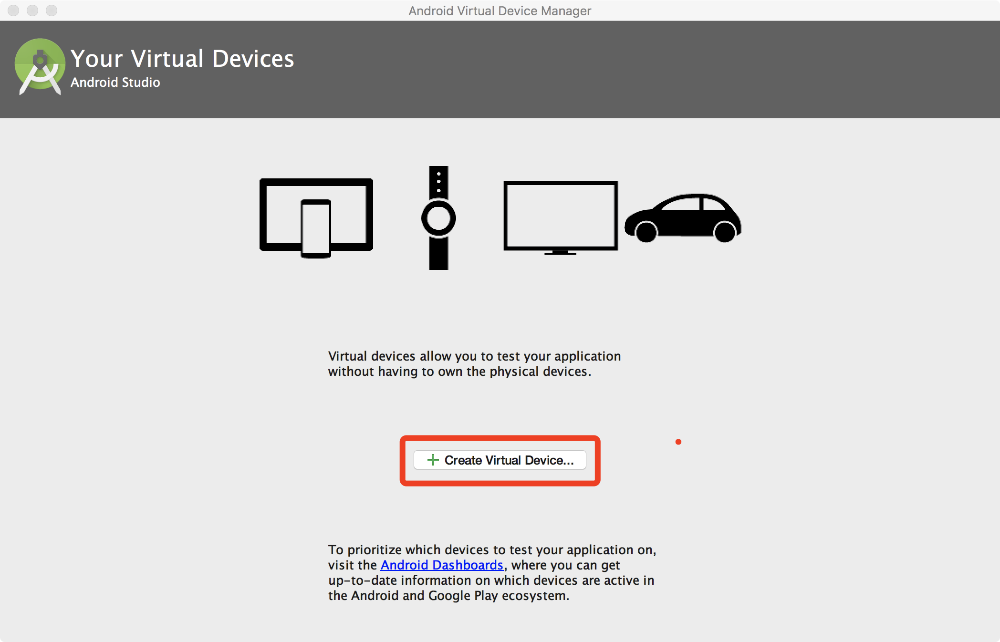
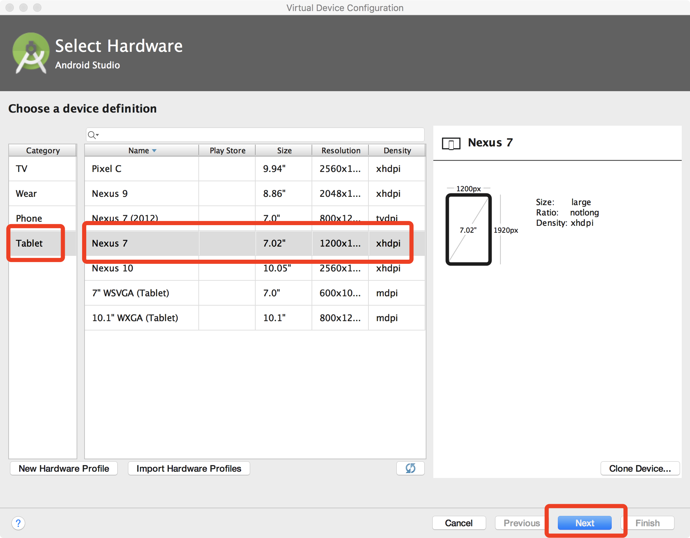
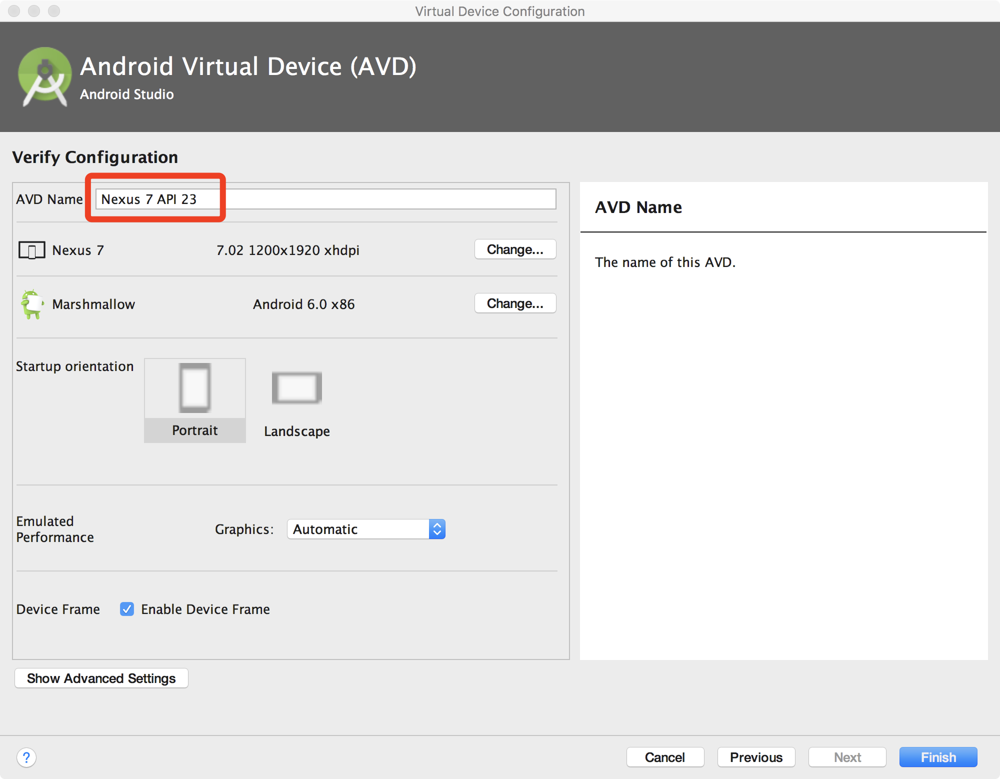
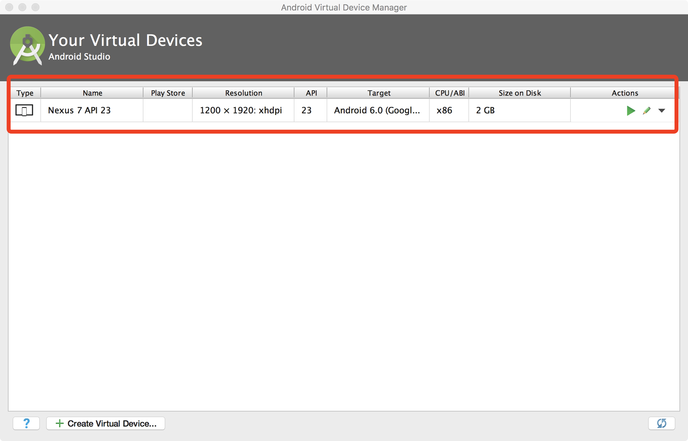

Install AimDroid on Emulator
The following guide is about how to setup AimDroid on an emulator and Mac OS.
There are simply five main steps.
- Create and start a Nexus 7 virtual deivce
- Install AimDroid
- Reboot
- Configure the controller
- Run
Step 1: Create a Nexus 7 Virtual Device
- Download and install Android Studio from https://developer.android.com/studio/index.html
-
Set
$ANDROID_HOMEto your SDK directory. Append$ANDROID_HOME/build-tools/<your-actual-version>/,$ANDROID_HOME/platform-tools, and$ANDROID_HOME/emulatorto your$PATH1 2 3 4
export ANDROID_HOME=/Users/tianxiaogu/Library/Android/sdk export PATH=$PATH:/Users/tianxiaogu/Library/Android/sdk/build-tools/25.0.3 export PATH=$PATH:/Users/tianxiaogu/Library/Android/sdk/platform-tools export PATH=$PATH:/Users/tianxiaogu/Library/Android/sdk/emulator
Note
Remember to check the actual version of your
build-tools. Mine is 25.0.3. -
Open Android Studio, and then open
AVD ManagerfollowingMenu->Tools->Android->AVD Manager. Create a Nexus 7 virtual device as follows.-
Open
AVD Managerand clickCreate Virtual Device.
-
In the new window, click tab
Tabletand then selectNexus 7, and then clicknext.
-
In the new window, select the recommended image (marked by red rectangle.) and then click
next.
Note
You must select the Marshmallow (Android 6.0) x86 version image.
- Why
Marshmallow? Becuase the current avaiable version of AimDroid is only compatible with Android 6.0, API level 23. - Why
x86? Because first the xposed framework has nox86_64support (http://dl-xda.xposed.info/framework/sdk23/) and second arm based virtual devices are slow.
- Why
-
Input a new name or just remember the default name and then click
Finish.
-
Finally, you can see the created virtual device.

-
-
In the command line, open the emulator from command line and enable
-writable-system. Wait for the emulator to start up.1
emulator @Nexus_7_API_23 -writable-system
Warning
-writable-systemis very important because Xposed needs to modify the files under/system.
Step 2: Install AimDroid.
We have downloaded all necessary binaries for installing the Xposed framework.
1 2 3 4 5 6 7 8 9 10 11 12 13 14 15 16 17 18 19 20 21 22 23 24 25 26 27 28 29 30 31 32 33 34 35 36 37 38 | all-in-one
├──ape
├──ape.jar
├──app-debug.apk
├──configure.json
├──install-emulator.sh
├──monidroid
├──xposed-installer-3-1-1.apk
├──xposed-v87-sdk23-x86.zip
└──xposed-zip
├──META-INF
│ ├──CERT.RSA
│ ├──CERT.SF
│ ├──MANIFEST.MF
│ └──com
│ └──google
│ └──android
│ ├──genymotion-ready
│ ├──update-binary
│ └──updater-script
├──flash-script.sh
└──system
├──bin
│ ├──app_process32_xposed
│ ├──dex2oat
│ ├──oatdump
│ └──patchoat
├──framework
│ └──XposedBridge.jar
├──lib
│ ├──libart-compiler.so
│ ├──libart-disassembler.so
│ ├──libart.so
│ ├──libsigchain.so
│ └──libxposed_art.so
└──xposed.prop
9 directories, 26 files
|
We have created a script (install-emulator.sh) that does the every thing but you should also know the detailed steps in case of any error.
1 | ./install-emulator.sh |
Manual Installation
-
Install Xposed.
1 2
adb push xposed-zip /sdcard/ adb shell "cd /sdcard/xposed && sh flash-script.sh"
-
Install the Xposed Module Manager app.
1
adb install xposed-installer-3-1-1.apk
-
Install
AimDroid-ape1 2 3
adb push ape.jar /sdcard/ adb shell mount -o rw,remount /system adb push ape /system/bin/
Note
The script can also be put into /sdcard/ on Android from 6.0. Here we put it in the
PATHfor convenient. -
Install
AimDroid-monitor1
adb install app-debug.apk
Warning
Open
Xposed Installerand enable theMoniDroidmodule.
Step 3: Reboot
- Reboot the virtual device to enable Xposed
1
adb reboot
Note
During reboot, all apps will be recompiled by the AOT compiler of the ART again. This would take several minutes.
Step 4: Configure the Controller
AimDroid Controller relies on a configuration file configure.json.
You can edit the configure.json in the all-in-one folder.
Here is a sample of configuration file.
1 2 3 4 5 6 7 8 9 10 11 | {
"PackageName":"com.google.android.apps.photos",
"MainActivity":"com.google.android.apps.photos.home.HomeActivity",
"SDKPath":"/Users/tianxiaogu/Library/Android/sdk/",
"Epsilon":0.2,
"Alpha":0.6,
"Gamma":0.5,
"MaxSeqLen":100,
"MinSeqLen":20,
"Time":3600
}
|
Here is the explanation of each option.
PackageName: the app name of the app under test.MainActivity: the entry activity of the app.SDKPath: the path to the Android SDK- We need to run the command
adbto communicate with the phone.
- We need to run the command
Epsilon,Alpha,Gamma: the parameters for the reinforcement learning module. See the paper for more details.MaxSeqLen,MinSeqLen: the length of actions in a single activity. See the paper for more details.Time: the total testing time in seconds.
Note
Put the configure.json into the same directory as the controller binary monidroid.
Step 5: Run
Simply invoke monidroid from your command line.
1 | ./monitroid |